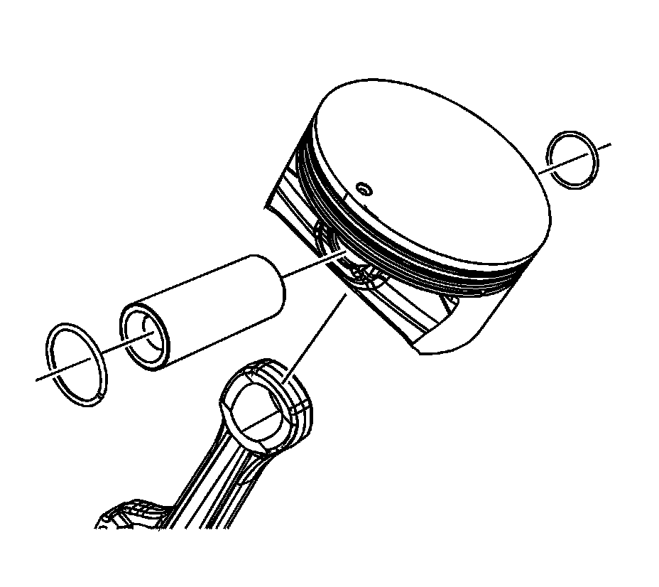
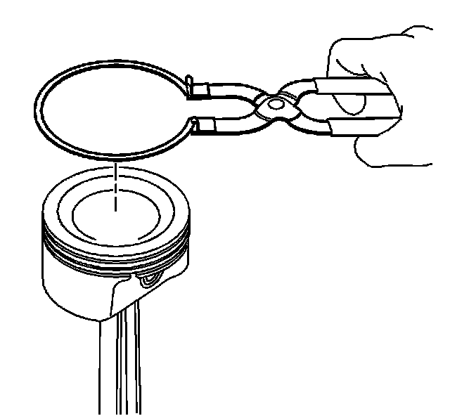

39. Piston and Connecting Rod Assemble
Piston and Connecting Rod Assemble
1. Install the retainer. The retainer should be seated in the groove of the pin bore.
2. Assemble the piston and connecting rod. The mark (1) on the top of the piston and the tab (2) on the side of the connecting rod should be facing the same direction.

3. Install the piston pin to the piston and connecting rod.
4. Install the retainers. The retainers should be seated in the groove of the pin bore.

Important: When installing piston rings, use a ring expander plier type tool. Do not roll the rings into the grooves of the piston. Use caution and care to expand the rings only slightly larger than the outside diameter (OD) of the piston.
5. Using piston ring pliers, install the piston rings onto the piston. The dimple or mark on the piston ring should face the top of the piston.
6. Position the oil control ring end gaps a minimum of 25 mm (1.0 in) from each other.
7. Position the compression ring end gaps 180 degrees opposite each other.

8. Install the connecting rod bearings to the rod and cap.